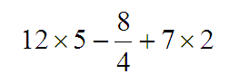

One evening Elisa was doing her math homework when Dina came by to visit. "The exercise I have to do," said Elisa, "is this one."
Convert this expression to its calculator key-sequence form,
then use your calculator to find its value.
"So far I have this much done," she added.
"That looks fine to me," said Dina. "Let's evaluate it now."
Each girl took her own calculator and confidently entered the numbers and symbols as Elisa had given them. But their smiles quickly turned to a puzzled look on their faces when they realized that different results came up.
"How can that be?" they asked almost simultaneously. "Let's do it again. Maybe we pressed a key incorrectly."
Once again they entered the expression, only to have the first results to be confirmed. "Ah, I think I know the trouble," said Dina. "Let me see your calculator."
Elisa showed her this:
Dina then said, "Here's mine."
You see, it's obvious now. They were using different kinds of instruments. So your task for this POW is to state what value each girl obtained and explain why it happened, based on the type of calculators being used.
| Comments? Send e-mail. | Back to top | Go back to Home Page | Go back to Contents |